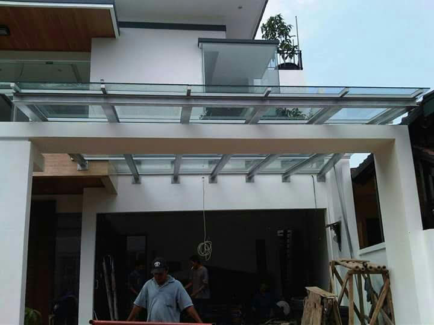
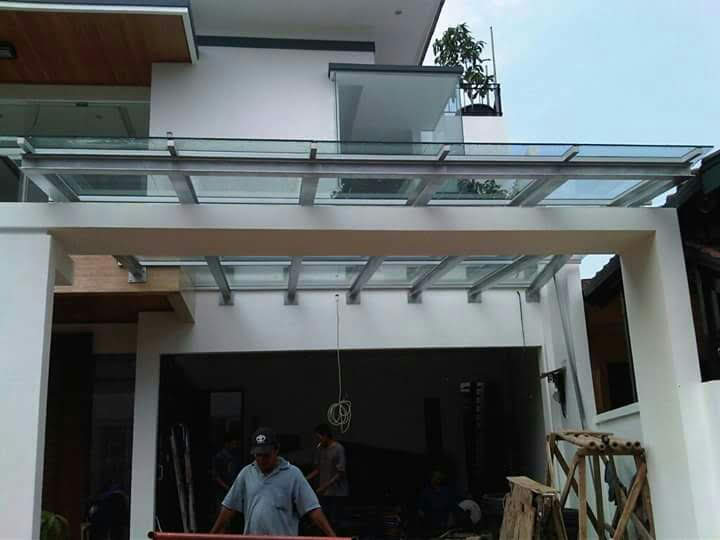
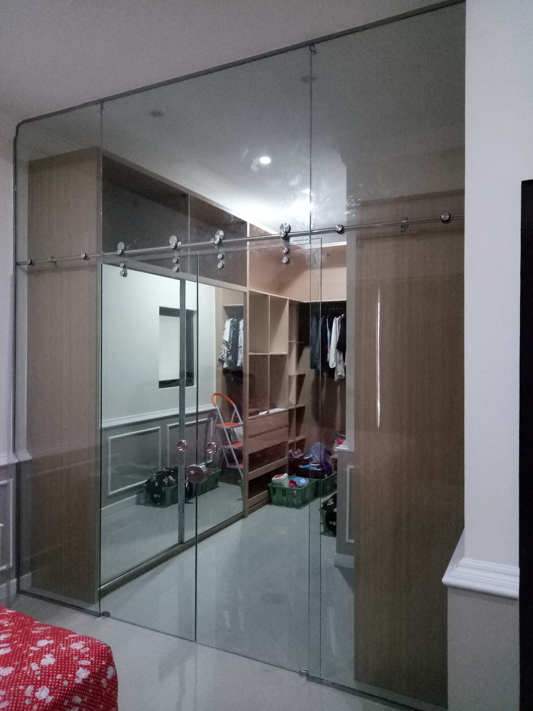
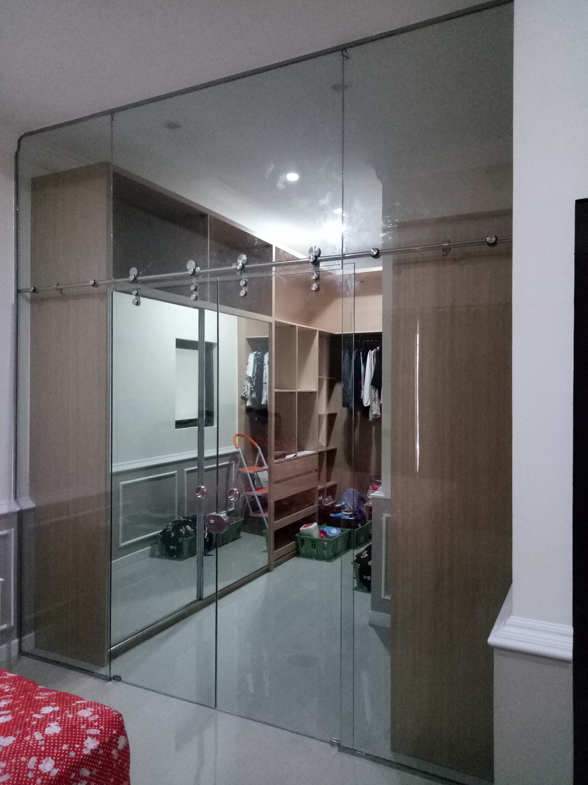
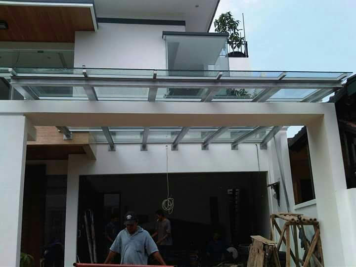
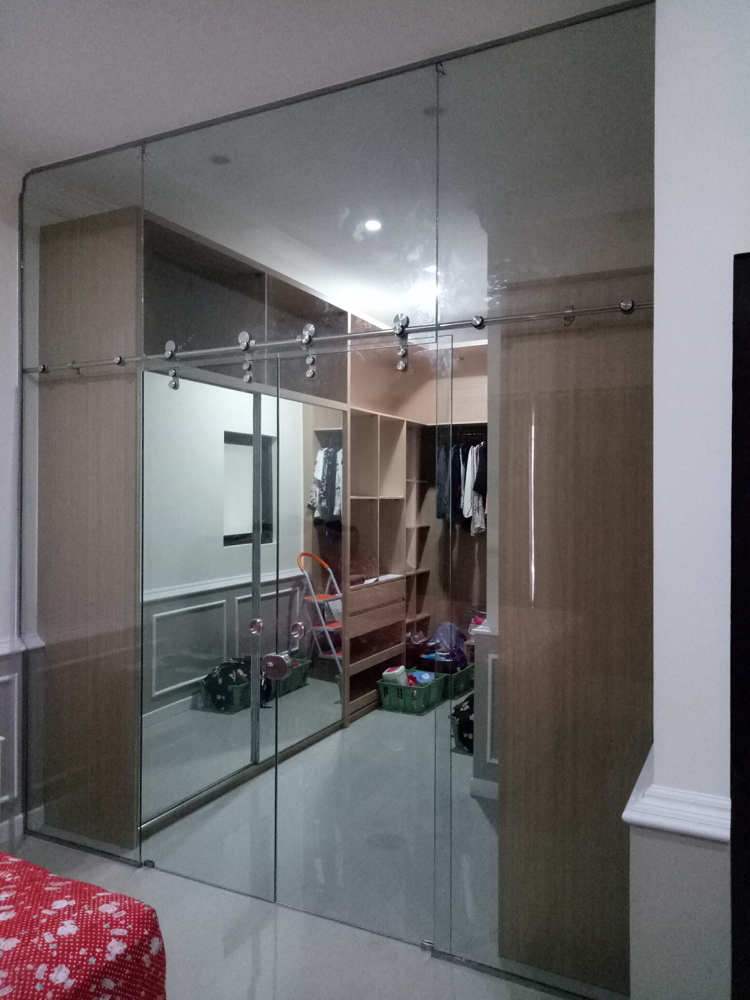

Galeri Hasil Pekerjaan
 



 

Hubungi Kami
📞 WhatsApp: 0878-8039-4222
📍 Area layanan: Jabodetabek
Jasa Aluminium Profesional Jabodetabek
Win Solution Aluminium melayani jasa pembuatan dan pemasangan aluminium seperti kusen, pintu, jendela, kanopi, shower screen, dan partisi aluminium. Kami melayani area Jakarta, Bogor, Depok, Tangerang, dan Bekasi dengan hasil rapi, kuat, dan bergaransi pengerjaan.


📞 WhatsApp: 0878-8039-4222
📍 Area layanan: Jabodetabek